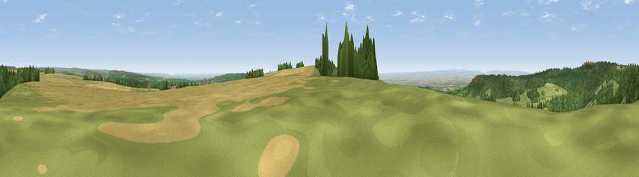

Viewpoint near Boltby
#2335 in England · top 7% of its area beats it · near BoltbyWhere it is
The exact computed spot (SE 50725 86888). Click the marker for map links.
The view, rendered

A 360° render of this exact spot computed from the terrain model, tree cover and land cover — summer colours, afternoon light, calibrated against photographs of famous viewpoints. Real trees, hedges and buildings will differ in detail.
The panorama
Grey silhouette: terrain skyline in each direction (720 bearings, Earth curvature and refraction included). Dashed green: skyline with trees (+15 m) and buildings (+8 m) as obstacles. Blue strip: how far the ground is visible on each bearing.
Where the view opens
Wedge length = distance to the farthest visible ground on that bearing (vegetation-aware). Rings at 10, 25 and 50 km.
What fills the view
46% grassland · 34% woodland · 19% cropland ·
Angular shares of the visible panorama (visual magnitude), not map area. Landscape diversity 0.46 (0–1 Shannon).
Key numbers
More beautiful places nearby
The staircase of upgrades: each row has a higher view potential than everything closer. Driving times are estimates from straight-line distance, calibrated against real road routing — check an actual route before setting out.
| Place | Direction | Drive | Score |
|---|---|---|---|
| Viewpoint near Boltby | S · 1 km | ~4 min | 79.6 |
| Viewpoint near Thirlby | S · 3 km | ~7 min | 81.2 |
| Viewpoint near Thirlby | S · 3 km | ~8 min | 81.5 |
| Beacon Hill | NNW · 14 km | ~25 min | 84.7 |
| Carlton Bank | N · 16 km | ~28 min | 85.1 |
| Roseberry Topping | NNE · 27 km | ~43 min | 85.8 |
| Viewpoint near Lazenby | NNE · 32 km | ~50 min | 86.4 |
| Warsett Hill | NNE · 39 km | ~58 min | 86.8 |
54.27513, -1.22253 · source: screening · position refined by local search. Computed location — check access rights before visiting.